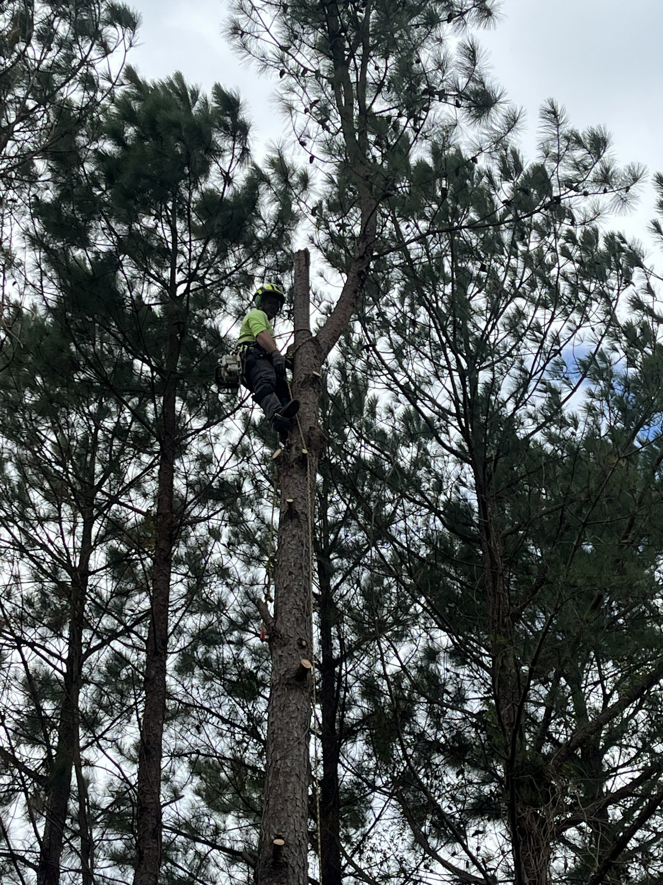
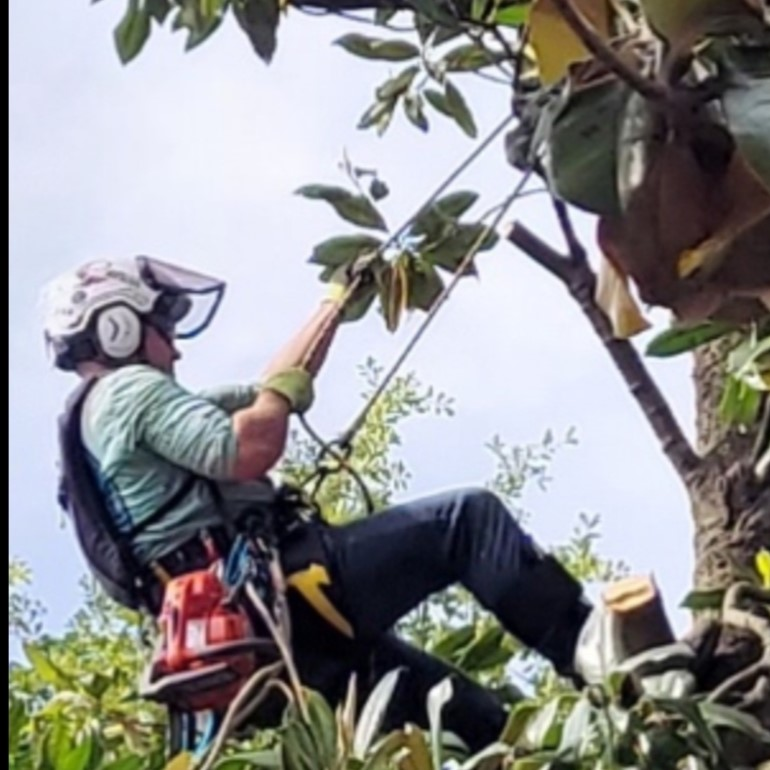

Entry-level developer with a foundation in HTML, CSS, JavaScript, and Python, backed by years of hands-on operational experience. Driven, detail-oriented, and committed to learning fast and building real solutions.
About Me
I’m an aspiring software developer transitioning from high-skill technical work into programming. My background in advanced tree climbing, rigging, and safety-critical operations taught me precision, discipline, and the ability to solve problems under pressure — the same mindset I now bring to writing clean, reliable code. I’m currently sharpening my skills in HTML, CSS, JavaScript, and Python through hands-on projects, with the goal of building software people can depend on every day.


Tied to the same tree your chopping down requires acute attention to detail
Background
My professional background spans military leadership, technical rigging, logistics, and complex
operations management. Across these high-stakes environments, I developed strengths that translate
directly into software development: breaking down complex systems, managing workflows, solving
problems under pressure, and communicating clearly within a team. These experiences built the
foundation for my transition into full-stack development. Today, I apply the same disciplined,
methodical approach to writing clean code, analyzing requirements, and building reliable digital
solutions.
Experience
Operations Manager / Crew Lead
Technical Tree Work, Logistics, Field Operations
Led day-to-day field operations, resource allocation, and workflow execution for
multi-site project environments.
Coordinated equipment, routing, staffing, and on-site logistics across dynamic schedules.
Implemented structured planning, operational troubleshooting, and risk mitigation techniques —
skills directly transferable to debugging and system optimization in software development.
Trained, coached, and supervised field teams, ensuring clear communication and high-performance
standards.
Developed strong analytical and decision-making abilities that support efficient problem-solving
in technical environments.
Maintained strict safety, documentation, and procedural discipline consistent with
engineering-quality processes.
United States Army — Cavalry NCO
Active Duty Military Service
Served as a Non-Commissioned Officer responsible for mission execution, team leadership,
and tactical decision-making in fast-changing situations.
Coordinated operations involving logistics, communication, and equipment readiness.
Developed core strengths in discipline, accountability, and structured problem-solving —
traits essential to high-performing development teams.
Mentored and trained junior soldiers, strengthening communication, instruction, and
leadership capabilities.
Maintained composure and clarity under pressure, reinforcing a calm, analytical approach to
solving technical challenges.
Adopted a mission-driven mindset that now supports consistent, reliable execution in
software engineering projects.